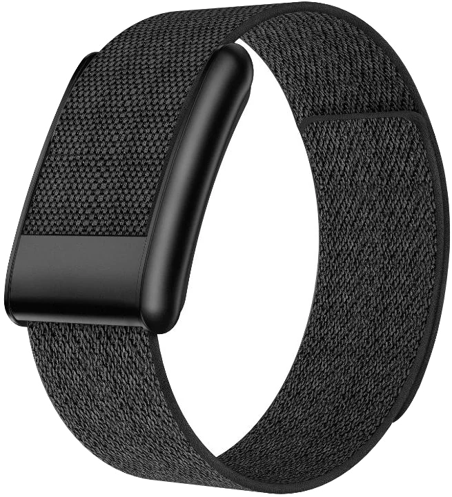
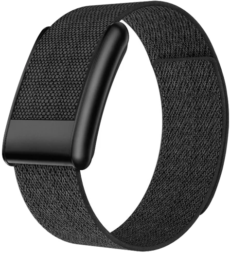

01
Данные приходят сами
Спортсмен отвечает с телефона за минуту, браслет и анализы подтягиваются без участия штаба.
AI Sports объединяет анализы, данные носимых устройств, сон, нагрузку и самочувствие в персональный профиль спортсмена и каждое утро показывает врачу и тренеру, кому нужна помощь.

спортсменов ежегодно получают травмы — часто после недель перегрузки, которую никто не видел.
подготовки уходит на травмы, болезни и перетренированность вместо тренировок.
спортсменов испытывают симптомы эмоционального выгорания, а программы восстановления одинаковы для всех.
Спортсмен надевает браслет и забывает о нём: ночью он измеряет пульс, вариабельность ритма, кислород в крови и температуру кожи, а утром данные уже в кабинете врача. Экрана нет специально — ничего не отвлекает на тренировке и ничего не нужно настраивать.
Платформа работает и с Garmin, Polar, Oura, Whoop и Apple Watch, если команда их уже использует. Браслет — вариант для команд, где устройств нет или они у всех разные.

Отклонения сна, HRV и нагрузки от личной нормы — с разбором факторов для врача.
Профиль спортсмена: готовность, прогноз на завтра, тренды сна и нагрузки за 30 дней.
Анализы и показатели устройств в одной таблице: референсы, динамика и статус.
Врач согласует или отклоняет действия — каждое решение фиксируется.
Спортсмен отвечает утром за минуту по личной ссылке, ответ приходит зашифрованным.
Врач, тренер и психолог видят только свою категорию данных.
Состояние команды, риски и динамика пилота — файл в один клик.
Обучены на открытых научных данных, точность и ограничения опубликованы.
Спортсмен отвечает с телефона за минуту, браслет и анализы подтягиваются без участия штаба.
Все данные выравниваются по времени и сравниваются не со средним, а с нормой этого спортсмена за 28 дней.
Риск и готовность считаются моделями на открытых данных, и каждый прогноз раскладывается на факторы.
Врач и тренер согласуют или отклоняют действия, каждое решение попадает в журнал с подписью и временем.
Лабораторная диагностика и ежедневный мониторинг — в едином профиле спортсмена.
Значения ниже — пример карточки одного спортсмена в демо.
Риск травмы на 7 дней — модель на открытых данных 74 спортсменов
11,4% ×1,3Recovery Score — готовность организма к нагрузке
91 /100Прогноз самочувствия по чек-ину, сну и нагрузке — с интервалом
6,1 /10Нагрузка −15%, сон +45 минут, больше белка, холодовое восстановление
−15% нагрузкаБелок 195 г · углеводы 510 г · жиры 95 г · вода 5,8 л
4 150 ккалСнизить интенсивность, спортивный психолог, дыхательные практики
72% burnoutНа первом этапе платформа запускается как пилот с командами и спортивными организациями. Цель пилота — качество данных, проверка моделей на реальных исходах, удобство для штаба и экономика сопровождения.
Фиксированный объём на 6 месяцев: анализы, консультации и сроки ответа согласуются заранее.
Whoop, Oura, Garmin и Polar собирают данные, но не объединяют их с клиническими анализами, психологией и рекомендациями в единую систему для штаба.
| Возможность | Фитнес-трекеры | AI Sports |
|---|---|---|
| Носимые устройства | ||
| Лабораторная диагностика | ||
| Журнал травм и болезней | ||
| Нутрициология | частично | |
| Психология | частично | |
| Сигналы по всей команде | ||
| Контур врача и тренера |
Персональные и медицинские данные платформы хранятся и обрабатываются на территории Республики Казахстан.
Медицинские выводы, рекомендации по нагрузке и питанию утверждает врач или профильный специалист.
Каждая роль видит только нужную ей категорию данных. Доступ к медицинским данным журналируется.
Отдельное согласие на каждую категорию данных. Спортсмен может отозвать согласие в любой момент.
Защищённое соединение, шифрование хранилищ и устройств, псевдонимизация для аналитики.
Для юниорских составов данные обрабатываются только с согласия законного представителя.
Расскажите о команде — подготовим предложение и ответим на вопросы о данных и безопасности. Или откройте кабинет и попробуйте сами.